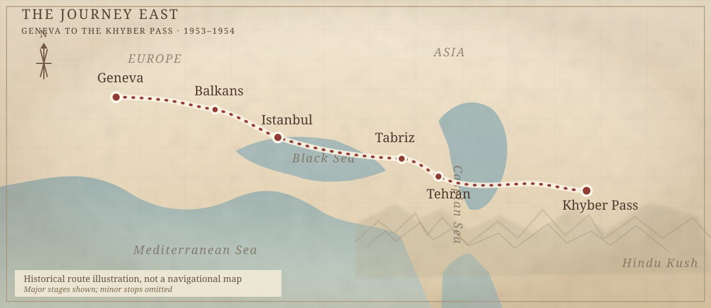

What if the real purpose of a journey were not to discover another country, but to discover the limits of one’s own certainty?
In 1953, the Swiss writer Nicolas Bouvier set out from Geneva with his friend, the painter Thierry Vernet, in a battered Fiat Topolino. Their journey through Yugoslavia, Turkey, Iran and towards the Khyber Pass became The Way of the World, first published in French as L’Usage du monde in 1963. The road was not a backdrop for adventure. It was the force that changed the travellers.
Geneva → Yugoslavia → Turkey → Iran → Khyber Pass


Travel as apprenticeship
Bouvier’s travels are shaped as much by breakdowns, waiting and uncertain finances as by spectacular scenery. Plans dissolve. A village, a chance meeting or a delayed departure becomes important precisely because it was not scheduled. The traveller has to exchange the desire for control for an appetite for attention.
This is the book’s first lesson: travel becomes transformative when the familiar habits that organise everyday life stop working. Patience ceases to be a virtue advertised in brochures. It becomes a practical necessity.
Overland travel turns the intervals between destinations into the story.
Transformation through encounter
Bouvier pays attention to ordinary life: conversation, music, hospitality, food and the shifting mood of a street. Another society is not a collection of picturesque details assembled for a visitor. It is a world with its own demands, pleasures and contradictions.
The change occurs when curiosity replaces judgment. By accepting that he may misunderstand, the traveller becomes capable of learning. Encounters can unsettle assumptions more deeply than the most famous monuments.
Markets, tea and daily rituals often tell stories that landmarks cannot.


The ethics of slowness
There is nothing effortless about travelling slowly in Bouvier’s account. Distance is felt in the body; weather, illness and exhaustion carry consequences. The prose does not promise that going far will make us wiser. It shows how exposure to unfamiliar rhythms may make us more observant, less certain and occasionally more generous.
To stay long enough is to see a place change with the hour, to hear the same language often enough to recognise its cadence, and to understand that discovery can be an act of humility rather than conquest.
Mountain roads are not simply a means of getting somewhere; they alter our sense of distance.
The finest journeys need not confirm who we are. They can change how we see.
Intriq Journal / Editorial reflection
Why Bouvier matters now
The deepest journeys do not leave us with a larger list of places seen. They leave us with a changed way of seeing. Bouvier’s achievement is to make that transformation visible without turning it into a neat promise of self-improvement.
For a culture that increasingly measures travel in highlights, his book offers a more demanding proposition: allow enough time for a place to resist your expectations. Travel is not always comfortable or beautiful. That is part of why it can matter.

The textures of the road

Slow down
Trade a rapid circuit for the chance to learn a neighbourhood’s ordinary rhythms.
Remain open
An unscheduled afternoon can reveal more than another planned attraction.

Travel to be changed
Let an encounter challenge what you thought you already understood.
To travel well is not simply to arrive elsewhere. It is to become more receptive to the world.